Chi Siamo
Sommario
- Introduzione ad OSGi e ServiceMix
- Introduzione ad Apache Camel
- Utilizzare GWT su ServiceMix
- SensorMix: Architettura di esempio
- Cool Facts: perchè ci piace questa architettura
Introduzione a OSGi e ServiceMix
Ovvero un approccio modulare per backend SOA
OSGi: questo sconosciuto
- OSGi: Open Service Gateway initiative
- OSGi Alliance: organizzazione fondata nel 1999 da Ericsson, IBM, Oracle e altri
- OSGi Framework: è un layer di modularità per la piattaforma Java
Il nucleo delle specifiche definisce la gestione del modello del ciclo di vita del software, i moduli (chiamati bundles), un service registry e un ambiente di esecuzione.
Una Metafora:
Pensate ai servizi di Windows o demoni Unix ma completamente Java
Perchè nasce OSGi
OSGi nasce con lo scopo di creare sistemi embedded per mercati residenziali, automotive e M2M. In questi contesti è spesso necessario comunicare con i devices attraverso protocolli differenti.
Il fine, quindi, era quello di fornire un modello di programmazione capace di realizzare servizi end-to-end creando uno strato di astrazione che unificasse i differenti protocolli.
Perchè si espande
We’ve all used development platforms in the past, such as Java Enterprise Edition (JEE), and even though there have been great advances in this industry, we’re still building large complex systems, which are hard to develop, maintain, and extend.
Implementazioni OSGi
Esistono diverse implementazioni di OSGi. Quelle più complete sono:
- Apache Felix
- Eclipse Equinox
- Knopflerfish
Come è fatto un framework OSGi
Il framework può essere rappresentato con tre layer:
- Il module layer definisce il concetto di modulo OSGi: il Bundle
- Il lifecycle layer definisce come i bundles sono dinamicamente installati e gestiti nel framework OSGi
- Il service layer supporta e promuove un modello di sviluppo di applicazioni flessibile che incapsula concetti resi di uso comune dal service-oriented programming
Il “Module layer”
Il cuore del module layer è il Bundle.
Un Bundle è un JAR che contiene metadati extra (manifest).
A differenza dei JAR il bundle ha:
- un classpath “ristretto” al solo bundle
- un manifest più ricco
Grazie al manifest è possibile estendere la visibilità del classpath dichiarando esplicitamente le proprie dipendenze
Il manifest OSGi
Nel manifest viene specificato anche:
- L’identificazione e la descrizione
- Il classloading
- L’attivazione
Esempi:
Il manifest OSGi
Manifest di un semplice JAR compilato con maven
Manifest-Version: 1.0
Build-Jdk: 1.7.0_40
Built-By: gdg-firenze
Created-By: Apache Maven
Il manifest OSGi
Manifest di un Bundle
Manifest-Version: 1.0
Bnd-LastModified: 1386750447262
Build-Jdk: 1.7.0_40
Built-By: gdg-firenze
Bundle-ManifestVersion: 2
Bundle-Name: GDG Firenze :: Sensormix :: Example Bundle
Bundle-SymbolicName: example-bundle
Bundle-Vendor: GDG Firenze :: Sensormix Team
Bundle-Version: 1.0.0.SNAPSHOT
Bundle-Activator: com.google.developers.gdgfirenze.dataservice.Activator
Created-By: Apache Maven Bundle Plugin
Export-Package:
com.google.developers.gdgfirenze.model;version="1.0.0.SNAPSHOT",
com.google.developers.gdgfirenze.osgi;version="1.0.0.SNAPSHOT",
com.google.developers.gdgfirenze.service;version="1.0.0.SNAPSHOT"
Import-Package:
javax.jws,javax.jws.soap,javax.xml.bind.annotation,javax.xml.ws
Tool: Bnd-1.50.0
Il “Lifecycle layer”
Il lifecycle layer ha due scopi:
Esternamente gestisce il ciclo di vita del bundle.
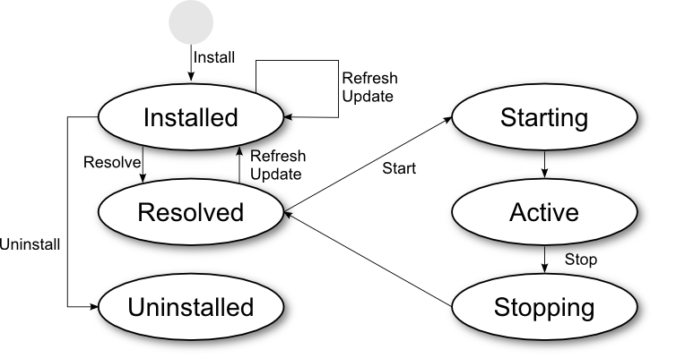Il “Lifecycle layer”
Il lifecycle layer ha due scopi:
Internamente definisce Bundle Activator
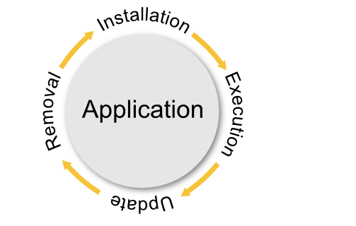= public static void main(String[] args)
Il “Service layer”
L’OSGi service layer promuove l’approccio basato su interface ed in particolare la separazione tra interfacce e implementazioni.
I Servizi OSGi sono interfacce Java che rappresentano un contratto tra il service provider e i service clients.
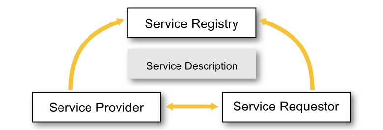OSGi: la Service Platform
L’OSGi definisce un set minimo di servizi per agevolare lo sviluppo di applicazioni modulari
- Cofiguration Admin (hot configuration)
- Event Admin
- Console Admin
- Log Service
- Blueprint component framework
Karaf: un OSGi container
Karaf è un OSGi container in cui sono deployati bundles (e servizi) aggiuntivi per fornire ulteriori funzionalità tra cui Hot deployment, Dynamic configuration, Logging System, Extensible Shell console (SSH)
Karaf è un chiaro esempio di architettura basata su OSGi

ServiceMix: un ESB su OSGi

Le principali funzionalità di ServiceMix sono:
- reliable messaging with Apache ActiveMQ
- messaging, routing and Enterprise Integration Patterns with Apache Camel
- WS-\* and RESTful web services with Apache CXF
- OSGi-based server runtime powered by Apache Karaf
Altre funzionalità offerte da ServiceMix:
- loosely coupled integration between all the other components with Apache ServiceMix NMR including rich Event, Messaging and Audit API
- complete WS-BPEL engine with Apache ODE
OSGi e Spring
Uso di Spring dentro a Karaf/ServiceMix
Lo springframework fornisce molte features interessanti (dependency injection, ORM, AOP,...)
Lo Spring Deployer riconosce i file Spring all'interno del folder META-INF/spring di un Jar, e ne istanzia i bean che vi sono definiti, senza necessità di utilizzare le API OSGi
<?xml version="1.0" encoding="UTF-8"?>
<beans xmlns="http://www.springframework.org/schema/beans"
xmlns:context="http://www.springframework.org/schema/context"
xmlns:xsi="http://www.w3.org/2001/XMLSchema-instance"
xsi:schemaLocation="http://www.springframework.org/schema/beans
http://www.springframework.org/schema/beans/spring-beans-3.0.xsd">
<bean id="consumer" class="com.myapplication.HelloWorldConsumer"
destroy-method="osgiDestroy" init-method="osgiInit"/>
</beans>
OSGi e Spring
Spring DM
Spring DM permette di utilizzare servizi OSGi da Spring in modo trasparente.
<?xml version="1.0" encoding="UTF-8"?>
<beans xmlns="http://www.springframework.org/schema/beans"
xmlns:xsi="http://www.w3.org/2001/XMLSchema-instance"
xmlns:osgi="http://www.springframework.org/schema/osgi"
xmlns:util="http://www.springframework.org/schema/util"
xmlns:context="http://www.springframework.org/schema/context"
xsi:schemaLocation="http://www.springframework.org/schema/osgi
http://www.springframework.org/schema/osgi/spring-osgi.xsd">
<osgi:service ref="eventService"
interface="com.myapplication.HelloWorldService" />
</beans>
Introduzione ad Apache Camel
Ovvero un modo agile per integrare sistemi eterogenei
“Integrare”
Cosa si intende quando parliamo di integrazione?
Trovare una soluzione al seguente problema:
Come posso far funzionare insieme molteplici applicazioni attraverso lo scambio di informazioni?
Enterprise Integration Patterns
Gli Enterprise Integration Patters offrono soluzioni per affrontare il precedente problema.
Cosa sono gli EIP?
Un libro!
EIP Importanti
- Message Channel:
- How does one application communicate with another using messaging?
- Message:
- How can two applications connected by a message channel exchange a piece of information?
- Message Router:
- How can you decouple individual processing steps so that messages can be passed to different filters depending on a set of conditions?
- Message Translator:
- How can systems using different data formats communicate with each other using messaging?
- Message Endpoint:
- How does an application connect to a messaging channel to send and receive messages?
- Dead Letter Channel:
- What will the messaging system do with a message it cannot deliver?
- Message Bus:
- What is an architecture that enables separate applications to work together, but in a decoupled fashion such that applications can be easily added or removed without affecting the others?
- Command Message:
- How can messaging be used to invoke a procedure in another application?
- Document Message:
- How can messaging be used to transfer data between applications?
- Event Message:
- How can messaging be used to transmit events from one application to another?
- Request-Reply:
- When an application sends a message, how can it get a response from the receiver?
- Canonical Data Model:
- How can you minimize dependencies when integrating applications that use different data formats?
Come si può fare integrazione?
I principali metodi tramite cui avviene integrazione sono:
- Scambio di file

- Database condiviso

- Remote Procedure Invocation

- Messaging

Gli EIP si focalizzano sulla integrazione via “messaging” e definiscono una notazione per rappresentare le soluzioni di integrazione.
Notazione EIP
Soluzioni con EIP
Soluzioni con EIP
Soluzioni con EIP
Attenti a questa qui!
Come implementare facilmente EIP?
(domanda retorica)
Integrare è però difficile perchè esiste una vasta eterogeneità di protocolli, interfacce e formati.
Come si possono implementare su una piattaforma Java gli Enterprise Integration Pattern?
con
Apache Camel
Apache Camel
Apache Camel è un framework di integrazione open-sorce versatile basato sugli Enterprise Integration Patterns del libro di Hohpe e Woolf.
Include un vasto insieme di componenti per funzionare con molti protocolli di trasporto e formati dati e permette di definire regole di instradamento e intermediazione attraverso l’uso di domain-specific language.
...si presta talmente bene alla integrazione che ServiceMix, dalla versione 3 alla 4, ha abbandonato la tecnologia JBI per adottare un nuovo approccio alla integrazione basato su Camel e OSGi.
Esempio: Content Based Router
from newOrder
choice
when isWidget to widget
otherwise to gadget
Content Based Router in Java DSL
choice
when isWidget to widget
otherwise to gadget
public class MyRoute extends RouteBuilder {
public void configure() throws Exception {
from("activemq:queue:newOrder")
.choice()
.when(xpath("/order/product = 'widget'"))
.to("activemq:queue:widget")
.otherwise()
.to("activemq:queue:gadget")
.end();
}
}
Content Based Router in Spring XML
choice
when isWidget to widget
otherwise to gadget
<camelContext xmlns="http://camel.apache.org/schema/spring">
<route>
<from uri="activemq:queue:newOrder"/>
<choice>
<when>
<xpath>/order/product = 'widget'</xpath>
<to uri="activemq:queue:widget"/>
</when>
<otherwise>
<to uri="activemq:queue:gadget"/>
</otherwise>
</choice>
</route>
</camelContext>
Una applicazione Camel completa:
import org.apache.camel.CamelContext;
import org.apache.camel.builder.RouteBuilder;
import org.apache.camel.impl.DefaultCamelContext;
public class CamelExample {
public static void main(String[] args) throws Exception {
CamelContext context = new DefaultCamelContext();
context.addRoutes(new RouteBuilder() {
public void configure() {
from("jetty:http://0.0.0.0:8080/tellMeSomething")
.transform(simple("You say ${in.body}"))
.to("velocity:response.vm");
}
});
context.start();
System.out.println("Press ENTER to exit");
System.in.read();
context.stop();
}
}
Camel in ServiceMix
Una volta attivati i bundle di Camel su Karaf-ServiceMix...
Camel in ServiceMix
...è possibile definire rotte direttamente nei file Spring XML, oppure utilizzare dei RouteBuilder in Java per avviare delle applicazioni che usano Camel all’interno di ServiceMix.
<?xml version="1.0" encoding="UTF-8"?>
<beans xmlns="http://www.springframework.org/schema/beans">
<camelContext xmlns="http://camel.apache.org/schema/spring">
<route>
<from uri="jetty:http://0.0.0.0:8080/tellMeSomething"/>
<convertBodyTo type="java.lang.String"/>
<transform>
<simple>You say ${in.body}</simple>
</transform>
<to uri="velocity:response.vm" />
</route>
</camelContext>
</beans>
Camel: componenti
162 componenti elencati su camel.apache.org/components.html
| ActiveMQ | ActiveMQ Broker | Activiti | AHC | AMQP | APNS | Atom | Avro | |
| AWS-CW | AWS-DDB | AWS-S3 | AWS-SDB | AWS-SES | AWS-SNS | AWS-SQS | Bean | |
| Bean Validation | Browse | Cache | Class | CMIS | Cometd | Context | ControlBus | |
| CouchDB | Crypto | CXF | CXF Bean | CXFRS | DataFormat | DataSet | Db4o | |
| Direct | Direct-VM | Disruptor | DNS | EJB | ElasticSearch | Esper | EventAdmin | |
| Exec | File | Flatpack | FOP | FreeMarker | FTP | FTPS | ||
| GAuth | Geocoder | GHttp | GLogin | GMail | GTask | Guava EventBus | Hazelcast | |
| HBase | HDFS | Hibernate | HL7 | HTTP | HTTP4 | iBATIS | IMAP | |
| IMAPS | Infinispan | IRC | JavaSpace | JBI | JCIFS | jclouds | JCR | |
| JDBC | Jetty | JGroups | JMS | JMX | JPA | Jsch | JT/400 | |
| Kestrel | Krati | Language | LDAP | Log | Lucene | MINA | MINA2 | |
| Mock | MongoDB | MQTT | MSV | Mustache | MVEL | MyBatis | Nagios | |
| Netty | Netty HTTP | NMR | OptaPlanner | Pax-Logging | POP3 | POP3S | Printer | |
| Properties | Quartz | Quartz2 | Quickfix | RabbitMQ | RCode | Ref | Restlet | |
| RMI | RNC | RNG | Routebox | RSS | Salesforce | SAP NetWeaver | Scalate | |
| SEDA | SERVLET | SFTP | Sip | SJMS | Smooks | SMPP | SMTP | |
| SMTP | SNMP | Solr | Splunk | Spring Event | Spring LDAP | Spring Neo4j | Spring Redis | |
| Spring Web Services | SpringBatch | SpringIntegration | SQL | StAX | Stomp | Stream | StringTemplate | |
| Stub | Test | Timer | Validation | Velocity | Vertx | VirtualBox | ||
| VM | Weather | Websocket | XML Security | XMPP | XQuery | XSLT | Yammer | |
| ZeroMQ | Zookeeper |
Camel: data format
25+ data format elencati su camel.apache.org/data-format.html
| Avro | Base64 | BeanIO | Bindy | Castor | |
| Crypto | CSV | EDI | Flatpack DataFormat | GZip data format | |
| HL7 DataFormat | JAXB | JiBX | JSON | PGP | |
| Protobuf | Serialization | SOAP | String | XmlBeans | |
| XmlJson | XMLSecurity DataFormat | XStream | Zip DataFormat | Zip File DataFormat |
Utilizzare GWT su ServiceMix
Ovvero un modo diverso per fare Web Application
SOA e SOFEA
Framework Web per SOFEA
ServiceMix e le Web Application
ServiceMix non nasce come Web Container ma permette lo stesso di deployare delle web application.
In particolare risulta molto interessante qualora l’applicazione segua l’approccio precedente.
La nostra SOFEA
Deploy di WAR sotto Karaf/ServiceMix
WAR Deployer
Il WAR Deployer è un bundle che si occupa del deploy di Web Application su Karaf/ServiceMix
Cosa fa?
- Cerca il file /WEB-INF/web.xml
- Se lo trova, pubblica i file statici e le Servlet definite nel web.xml via HTTP
Ma basta?
Deploy di WAR sotto Karaf/ServiceMix
Il WAR ha bisogno di modifiche
- Deve avere un file /META-INF/MANIFEST.MF nella root del JAR
- Il MANIFEST.MF deve contenere:
- L'header
Web-ContextPath(l'applicazione verrà pubblicata al context path specificato da questo header) - L'header
Bundle-ClassPath: .,WEB-INF/classes(informa Karaf/ServiceMix dove sono i bytecode)
- L'header
É raccomandato fare uno Skinny war e usare dipendenze di Bundle (usando il maven-war-plugin e il maven-bundle-plugin)
Abbiamo Finito?
Applicazioni GWT sotto Karaf/ServiceMix
...anche gwt-servlet.jar ha bisogno di modifiche!
GWT non è predisposto per essere usato in OSGi.
Non è un bundle perchè al manifest della gwt-servlet.jar mancano gli header OSGi.
E allora?
Come usare GWT con OSGi
Quattro strade:
Ci sono 4 strade per ottenere un gwt-servlet.jar OSGi compliant e poterlo deployare su Karaf/ServiceMix.
- Caso 1:
- Compilarsi a mano il gwt-servlet.jar con gli header OSGi necessari
- Caso 2:
- Deployare il Jar non-OSGi configurandolo al momento della installazione su Karaf/ServiceMix passando come parametro le informazioni che dovrebbero essere contenute nel MANIFEST.MF
- Caso 3:
- Aspettare che il ServiceMix Team rilasci il Bundle per GWT-Servlet con gli header OSGi per la versione 2.6.0
- Caso 4:
- Sperare che il GWT Project Team accetti la patch, che abbiamo proposto, nella versione GWT 2.6.0 o successive.
Come usare GWT con OSGi
Che cosa significa?
- Caso 1:
-
git fetch https://gwt.googlesource.com/gwt refs/changes/51/5351/7
git checkout FETCH_HEAD
ant dist
install -s mvn:com.google.gwt/gwt-servlet/2.6.0
- Caso 2:
install -s wrap:mvn:com.google.gwt/gwt-servlet/2.6.0$Bundle-Name=GWT-Servlet&Bu
ndle-SymbolicName=com.google.gwt.gwt-servlet&Bundle-Version=2.6.0&Export-Packag
e=com.google.gwt.user.client.rpc.*,org.hibernate.validator.engine,com.google.we
b.bindery.requestfactory.vm.impl.*,!javax.validation,!org.hibernate.validator.*
,!*.client.*,!*.impl.*,*&Import-Package=javax.servlet.*,javax.validation;resolu
tion:=optional,org.json;resolution:=optional,javax.validation.*;resolution:=opt
ional,org.json.*;resolution:=optional,!com.google.gwt.*,*;resolution:=optional- Caso 3:
install -s mvn:org.apache.servicemix.bundles/org.apache.servicemix.bundles.gwt-servlet/2.6.0_1- Caso 4:
install -s mvn:com.google.gwt/gwt-servlet/2.6.0
Esempi GWT su ServiceMix
Abbiamo adattato alcuni esempi della distribuzione GWT per funzionare su Karaf/ServiceMix:
https://github.com/cristcost/gwt-karaf-examples
Tra poco faremo vedere un esempio che mette insieme tutte le tecnologie raccontate fino ad ora.
SensorMix
Esempio di architettura basata su ServiceMix, Camel e GWT
Come è composto SensorMix
Architettura esterna
Come è composto SensorMix
Architettura interna
Demo
Data Model Bundle
Il Canonical Data Model EIP
Dal libro EIP:
“I am designing several applications to work together through Messaging. Each application has its own internal data format.”
“How can you minimize dependencies when integrating applications that use different data formats?”
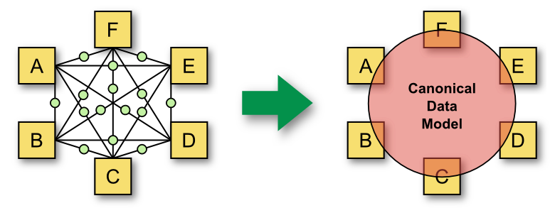Il Canonical Data Model EIP
Il nostro approccio al CDM
A noi piace l’approccio Java first:
- Modello dati: POJO
- Modello servizi: Interfacce Java
Usiamo annotazioni JaxB e JaxWS per generare dal nostro modello gli XML Schema e WSDL.
Troviamo che cominciare dagli oggetti sia più naturale, lineare e agile:
- Lo XML Schema finale risulta più pulito
- Si può fare a meno della validazione XML
- eccezioni Java = XML non valido
- Lavorare sulle classi Java è più veloce (per noi che siamo sviluppatori)
Binding Java-XML Schema
@XmlAccessorType(XmlAccessType.FIELD)
@XmlType(name = "SampleReport")
public class SampleReport implements Serializable {
@XmlAttribute(required = true, name = "sensorId")
@XmlSchemaType(name = "anyURI")
private String sensorId;
@XmlAttribute(required = false, name = "sampleType")
private String sampleType;
@XmlElement(required = false, name = "dailySampleReport")
private List<DailySampleReport> dailySampleReports;
<xs:complexType name="SampleReport">
<xs:attribute name="sensorId" type="xs:anyURI" use="required"/>
<xs:attribute name="sampleType" type="xs:string"/>
<xs:sequence>
<xs:element name="dailySampleReport" type="tns:DailySampleReport"
maxOccurs="unbounded" minOccurs="0" />
</xs:sequence>
</xs:complexType>
POJO annotati JaxB
@XmlAccessorType(XmlAccessType.FIELD)
@XmlType(name = "SampleReport")
public class SampleReport implements Serializable {
/** The sensor id. */
@XmlAttribute(required = true, name = "sensorId")
@XmlSchemaType(name = "anyURI")
private String sensorId;
/** The sample type. */
@XmlAttribute(required = false, name = "sampleType")
private String sampleType;
/** The daily sample reports. */
@XmlElement(required = false, name = "dailySampleReport")
private List<DailySampleReport> dailySampleReports;
// ...
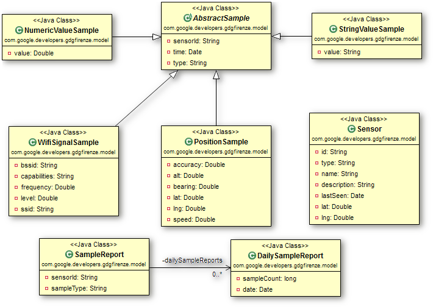
Interfaccia annotata JaxWS
@WebService(name = "SensormixService",
targetNamespace = "http://developers.google.com/gdgfirenze/ns/service")
@SOAPBinding(parameterStyle = ParameterStyle.WRAPPED, style = Style.DOCUMENT, use = Use.LITERAL)
public interface SensormixService {
@WebMethod(action = "urn:#listSensorsIds")
@RequestWrapper(localName = "listSensorsIdsIn",
targetNamespace = "http://developers.google.com/gdgfirenze/ns/service")
@ResponseWrapper(localName = "listSensorsIdsOut",
targetNamespace = "http://developers.google.com/gdgfirenze/ns/service")
@WebResult(name = "sensorId")
List<String> listSensorsIds();
@WebMethod(action = "urn:#listSamplesTypes")
@RequestWrapper(localName = "listSamplesTypesIn",
targetNamespace = "http://developers.google.com/gdgfirenze/ns/service")
@ResponseWrapper(localName = "listSamplesTypesOut",
targetNamespace = "http://developers.google.com/gdgfirenze/ns/service")
@WebResult(name = "sampleType")
List<String> listSamplesTypes();
// ...
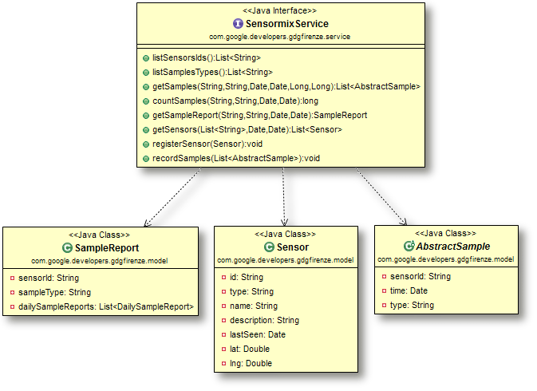
Utilizzo del CDM su GWT
Infine, se si vuole usare il data model anche dentro un progetto GWT, basta aggiungere un modulo .gwt.xml:
<?xml version="1.0" encoding="UTF-8"?>
<!-- When updating your version of GWT, you should also update this DTD reference,
so that your app can take advantage of the latest GWT module capabilities. -->
<!DOCTYPE module PUBLIC "-//Google Inc.//DTD Google Web Toolkit 2.5.1//EN"
"http://google-web-toolkit.googlecode.com/svn/tags
/2.5.1/distro-source/core/src/gwt-module.dtd">
<module>
<!-- Specify the paths for translatable code -->
<source path='model' />
<source path='service' />
</module>
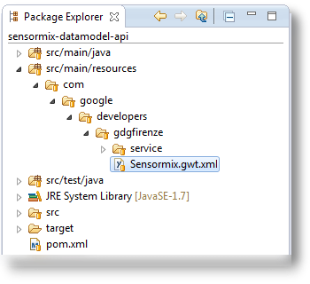
Data Service Bundle
Il bundle dataservice
Contiene un servizio che espone funzionalità di memorizzazione e recupero di informazioni
Il servizio viene registrato in OSGi tramite Spring DM
La registrazione del servizio
<osgix:cm-properties id="dataSourceProperties"
persistent-id="sensormix.jpa.persistenceunit">
<prop key="sensormix_db.driverClassName">org.hsqldb.jdbcDriver</prop>
<prop key="sensormix_db.url">jdbc:hsqldb:mem:sensormix_db</prop>
<prop key="sensormix_db.username">sa</prop>
<prop key="sensormix_db.password"></prop>
</osgix:cm-properties>
<osgi:service ref="sensormixService">
<osgi:interfaces>
<value>com.google.developers.gdgfirenze.service.SensormixService</value>
<value>com.google.developers.gdgfirenze.osgi.SensormixAdminInterface</value>
</osgi:interfaces>
</osgi:service>
Il servizio in java
public class SensormixServiceJpaImpl implements SensormixService, SensormixAdminInterface {
private EntityManagerFactory entityManagerFactory;
@Override
public List<String> listSensorsIds() {
List<String> result = new ArrayList<String>();
try {
EntityManager em = entityManagerFactory.createEntityManager();
TypedQuery<String> q = em.createQuery("SELECT s.id FROM JpaSensor s", String.class);
result.addAll(q.getResultList());
em.close();
} catch (Exception e) {
logger.log(Level.SEVERE, "Error during sensors list retrieving", e);
}
return result;
}
Spring ORM
<bean id="emf" class="org.springframework.orm.jpa.LocalContainerEntityManagerFactoryBean">
<property name="persistenceUnitName" value="sensormix_db" />
<property name="jpaVendorAdapter">
<bean class="org.springframework.orm.jpa.vendor.EclipseLinkJpaVendorAdapter">
<property name="showSql" value="true" />
</bean>
</property>
<property name="jpaProperties">
<props>
<prop key="eclipselink.ddl-generation">create-tables</prop>
<prop key="eclipselink.logging.level">INFO</prop>
<prop key="eclipselink.weaving">false</prop>
<prop key="javax.persistence.jdbc.driver">${sensormix_db.driverClassName}</prop>
<prop key="javax.persistence.jdbc.url">${sensormix_db.url}</prop>
<prop key="javax.persistence.jdbc.user">${sensormix_db.username}</prop>
<prop key="javax.persistence.jdbc.password">${sensormix_db.password}</prop>
</props>
</property>
</bean>
<bean id="sensormixService"
class="com.google.developers.gdgfirenze.dataservice.SensormixServiceJpaImpl">
<property name="entityManagerFactory" ref="emf" />
</bean>
Integration Bundle
Il bundle di integrazione
Definisce le rotte Camel per l'ingresso dei campioni da Android, Arduino e iOS
Utilizza quasi esclusivamente configurazione via Spring XML
Unica eccezione: la classe SampleAdapter che trasforma da protocol buffer al nostro data model tramite codice java
Rivediamo le interfacce SensorMix
Le rotte di ingresso UDP e HTTP
Usate da Android e da Arduino
<route> <from uri="mina2:udp://0.0.0.0:10081" /> <to uri="seda:jsonEntry" /> </route>
<route>
<from uri="jetty:http://0.0.0.0:10080/sensormixSamplesEndpoint" />
<to uri="seda:jsonEntry" />
<setHeader headerName="Content-Type">
<constant>application/json</constant>
</setHeader>
<to uri="velocity:vm_templates/json_response_template.vm" />
</route>
La rotta di trasformazione del JSON
<route>
<from uri="seda:jsonEntry" />
<convertBodyTo type="java.lang.String" />
<unmarshal>
<xmljson elementName="item" arrayName="list" rootName="root" />
</unmarshal>
<to uri="xslt:xslt_adapters/raw2cdm_adapter.xsl" />
<unmarshal>
<jaxb contextPath="com.google.developers.gdgfirenze.service" />
</unmarshal>
<to uri="seda:serviceEntry" />
</route>
La rotta TCP + ProtoBuf
<route>
<from uri="netty:tcp://0.0.0.0:10082/?decoders=#length-decoder&sync=false" />
<unmarshal>
<protobuf instanceClass="com.google.developers
.gdgfirenze.protobuf.SensormixProtos$SampleMessage" />
</unmarshal>
<bean ref="sampleAdapter" method="transform" />
<to uri="seda:serviceEntry" />
</route>
<bean id="sampleAdapter"
class="com.google.developers.gdgfirenze.integration.SampleAdapter" />
package com.google.developers.gdgfirenze.integration;
public class SampleAdapter {
public SamplesPayload transform(SampleMessage message) {
SamplesPayload ret = new SamplesPayload();
// process 'SampleMessage' and return the adapted 'SamplesPayload'
return ret;
}
}
L'output verso il servizio OSGi
<osgi:reference id="sensormixService"
interface="com.google.developers.gdgfirenze.service.SensormixService"
timeout="30000" cardinality="1..1" />
<route>
<from uri="seda:serviceEntry" />
<to uri="bean:sensormixService?method=recordSamples(${body.samples})" />
</route>
Admin WebApp Bundle
SensorMix GWT Web Application
Abbiamo visto che per il deploy di una Web Application GWT su Karaf/ServiceMix dobbiamo garantire che:
- Il WAR sia un bundle OSGi compliant
- Che gwt-servlet.jar sia stata correttamente installata come bundle.
Noi cosa abbiamo fatto?
Configuriamo il maven-bundle-plugin
<instructions>
<Bundle-SymbolicName>${project.artifactId}</Bundle-SymbolicName>
<Bundle-Description>${project.description}</Bundle-Description>
<Web-ContextPath>/${project.artifactId}</Web-ContextPath>
<Bundle-ClassPath>.,WEB-INF/classes</Bundle-ClassPath>
<Import-Package>
com.google.gwt.user.client.rpc.*,
com.google.gwt.user.client.rpc.core.com.google.gwt.core.shared,
com.google.gwt.user.client.rpc.core.java.lang,
com.google.gwt.user.client.rpc.core.java.math,
com.google.gwt.user.client.rpc.core.java.sql,
com.google.gwt.user.client.rpc.core.java.util,
com.google.gwt.user.client.rpc.core.java.util.logging,
com.google.gwt.user.server.rpc.core.java.lang,
com.google.gwt.user.server.rpc.core.java.util,
!com.google.gwt.*.client.*,
*
</Import-Package>
</instructions>
Configuriamo il maven-war-plugin
Ricordate lo skinny war?
Si tolgono le dipendenze dalla lib:
<packagingExcludes>WEB-INF/lib/,
WEB-INF/classes/META-INF/</packagingExcludes>
Si istruisce Maven di copiare il Manifest al posto giusto:
<archive>
<manifestFile>
${project.build.outputDirectory}/META-INF/MANIFEST.MF
</manifestFile>
</archive>
Importiamo il Canonical Data Model
Nel file SensormixAdminApp.gwt.xml:
<inherits name='com.google.developers.gdgfirenze.Sensormix' />
Nel pom.xml:
<dependency>
<groupId>com.google.developers.gdgfirenze</groupId>
<artifactId>sensormix-datamodel-api</artifactId>
<version>${project.version}</version>
</dependency>
<dependency>
<groupId>com.google.developers.gdgfirenze</groupId>
<artifactId>sensormix-datamodel-api</artifactId>
<version>${project.version}</version>
<classifier>sources</classifier>
</dependency>
GWT RPC Plumbing diagram
Siamo partiti da qui...
Sensormix RPC Plumbing diagram
...per arrivare qui
GWT RPC in Sensormix
Lato Client
Instanziare la service interface usando GWT.create():
GwtSensormixServiceAsync sensormixService
= GWT.create(GwtSensormixService.class);
Fare la chiamata al servizio:
sensormixService.listSensorsIds(new AsyncCallback() { @Override public void onFailure(Throwable caught) { // handle the request failure } @Override public void onSuccess(List result) { // handle the response from the service } });
GWT RPC in Sensormix
Lato Server
SensormixServiceProxy.java è un servizio GWT che usa un servizio OSGi. Nella inizializazione ottiene dei riferimenti al servizio utilizzando le API del Framework.
public void init() throws ServletException {
final BundleContext context = FrameworkUtil.getBundle(this.getClass()).getBundleContext();
tracker = new ServiceTracker(context, SensormixService.class.getName(), null);
tracker.open();
}
Come viene usata l’istanza del servizio OSGi?
private SensormixService getService() {
return (SensormixService) tracker.waitForService(10000);
}
public List<String> listSensorsIds() {
return getService().listSensorsIds();
}
Cool Facts
Ovvero perchè ci piace questa architettura
Integrazione di Arduino
Integrazione di Arduino
Integrazione di Android
HttpPost httppost = new HttpPost(url.toString());
httppost.setHeader("Content-type", "application/json");
StringEntity se = new StringEntity(bodyForHttpPostRequest);
se.setContentEncoding(new BasicHeader(HTTP.CONTENT_TYPE,
"application/json"));
httppost.setEntity(se);
HttpResponse response = httpclient.execute(httppost);
String temp = EntityUtils.toString(response.getEntity());
logger.info("JSON post response: " + temp);
Integrazione di Android - NFC
Tag tag = getIntent().getParcelableExtra(NfcAdapter.EXTRA_TAG);
StringBuilder id = new StringBuilder();
byte[] data = tag.getId();
for (int i = 0; i < data.length; i++) {
id.append(String.format("%02x", data[i]));
if (i < data.length - 1) {
id.append(":");
}
}
JSONObject jsonSamplePacket = new JSONObject();
JSONObject obj = new JSONObject();
jsonSamplePacket.put("sample", obj);
obj.put("device_id", "the device id");
obj.put("time", dateFormat.format(new Date()));
obj.put("nfc", id);
Intent intent = new Intent(this, DataSenderService.class);
intent.putExtra(DataSenderService.INTENT_EXTRA,
jsonSamplePacket.toString());
startService(intent);
Installiamo ServiceMix
 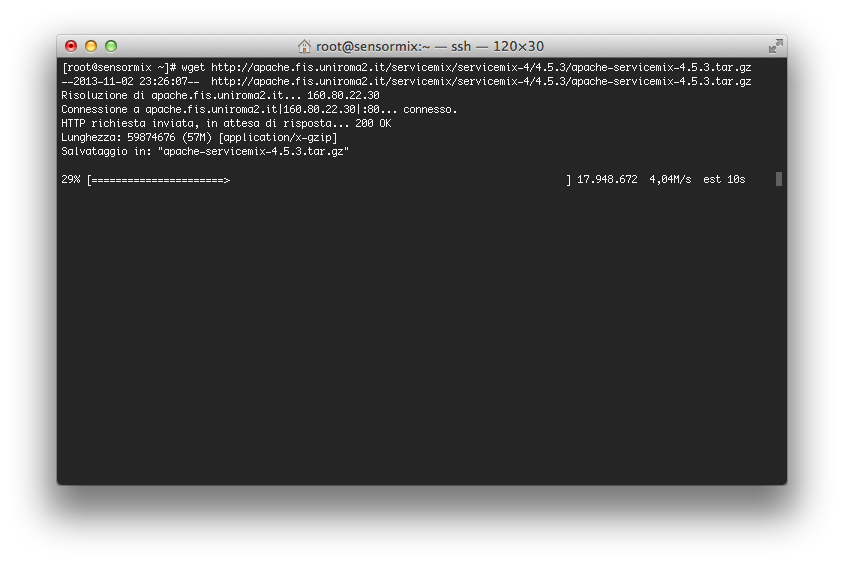
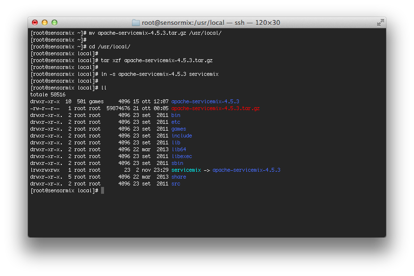
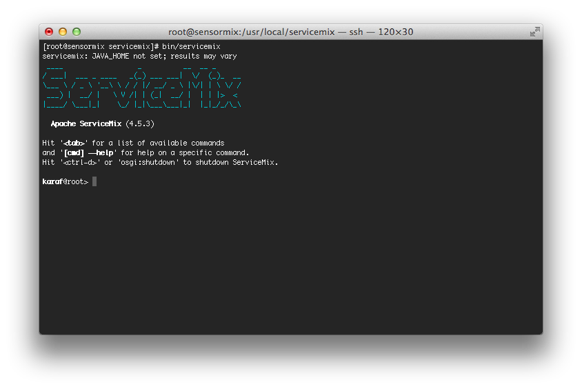
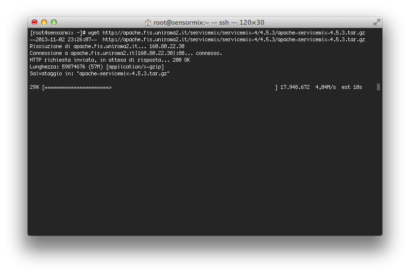
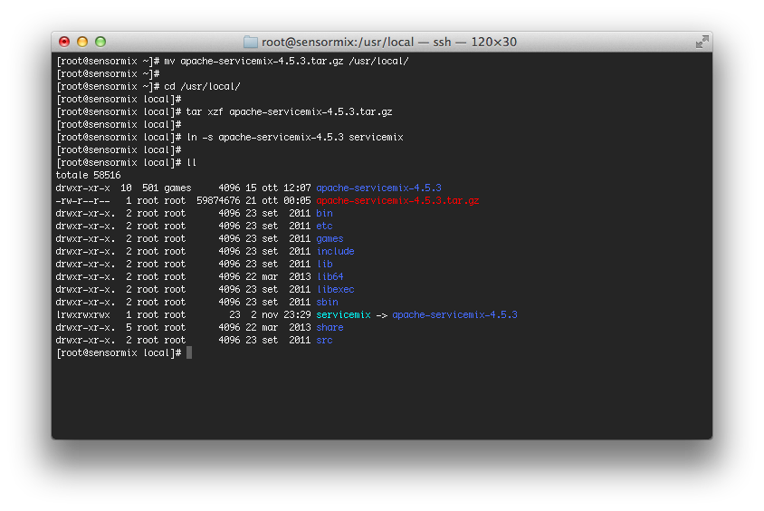
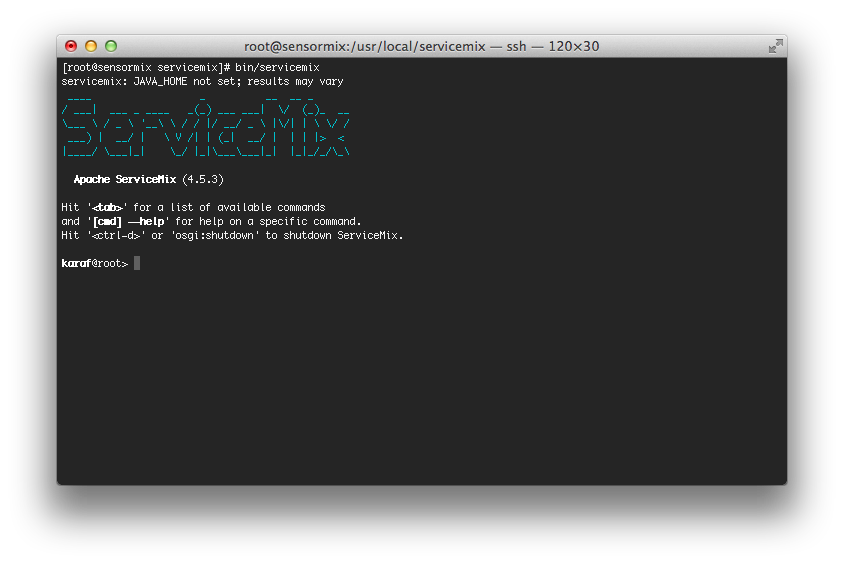
Creare una distribuzione della applicazione
Le Karaf Features
<features name='sensormix-1.0.0'>
<feature name="sensormix-core" version="1.0.0">
<bundle>mvn:com.google.developers.gdgfirenze/sensormix-datamodel-api/1.0.0</bundle>
</feature>
<feature name="sensormix-dataservice" version="1.0.0">
<feature version="1.0.0">sensormix-core</feature>
<feature>spring-orm</feature>
<!-- ... -->
<bundle>mvn:mysql/mysql-connector-java/5.1.26</bundle>
<bundle>mvn:org.apache.servicemix.bundles/org.apache.servicemix.bundles.commons-dbcp/1.4_3</bundle>
<bundle>mvn:org.apache.servicemix.bundles/org.apache.servicemix.bundles.javax-inject/1_2</bundle>
<bundle>mvn:org.eclipse.persistence/javax.persistence/2.1.0</bundle>
<bundle>mvn:org.eclipse.persistence/org.eclipse.persistence.jpa/2.5.0</bundle>
<!-- ... -->
<bundle>mvn:com.google.developers.gdgfirenze/sensormix-dataservice-bundle/1.0.0</bundle>
</feature>
<feature name="sensormix" version="1.0.0">
<feature version="1.0.0">sensormix-dataservice</feature>
<feature version="1.0.0">sensormix-webservice</feature>
</feature>
</features>
Il Features Maven Plugin di Karaf
<plugin>
<groupId>org.apache.karaf.tooling</groupId>
<artifactId>features-maven-plugin</artifactId>
<version>${features.plugin.version}</version>
<executions>
<execution>
<id>add-features-to-repo</id>
<phase>package</phase>
<goals>
<goal>add-features-to-repo</goal>
</goals>
<configuration>
<descriptors>
<descriptor>com.google.developers.gdgfirenze
/sensormix-deploy-features/1.0.0/xml/features</descriptor>
</descriptors>
<features>
<feature>sensormix/1.0.0</feature>
</features>
<repository>target/local-repo</repository>
</configuration>
</execution>
</executions>
</plugin>
Installiamo SensorMix
Kryo e Benchmark
Si è scelto di utilizzare un’unica classe per tutti i sample (con un campo byte[] che contiene la serializzazione (Kryo) del sample).
Sfruttando l’astrazione di JPA sono stati fatti benchmark di occupazione e performance per supportare le scelte e validare la soluzione.
ServiceMix: Quanto overhead?
Il pacchetto ServiceMix occupa circa 65MB sul filesystem
Maven ed Eclipse
SensorMix è stato sviluppato in Team utilizzando Maven ed Eclipse.
In particolare:
- Sviluppo GWT integrato nello stesso Java IDE
- Distribuzione tramite Karaf's Features Maven Plugin
- Checkstyle e PMD per migliorare la cooperazione del Team
Conclusioni
Considerazioni finali e riferimenti bibliografici
Issue su GWT
Serve GWT 2.6.0 che sia reso OSGi ready:
- per favore aiutateci, votate lo issue sulla Osgify di GWT:
- oppure lo issue su Jira per avere il bundle rilasciato da ServiceMix il prima possibile:
Materiali
- Slides:
- http://cristcost.github.io/sensormix/
- Sensormix:
- https://github.com/cristcost/sensormix/
- Sensormix Android:
- https://github.com/cristcost/sensormix-android/
- Sensormix Arduino:
- https://github.com/michelefi/sensormix-arduino/
Libri
- Camel in Action
- C. Ibsen, J. Anstey - Manning
- Enterprise Integration Patterns
- G. Hohpe, B. Woolf - Addison Wesley
- Spring DM in Action
- A. Cogoluègnes, T. Templier, A. Piper - Manning
- OSGi in Action
- R. S. Hall, K. Pauls, S. McCulloch, D. Savage - Manning
- OSGi In depth
- Alexandre de Castro Alves - Manning
Links
- Apache Camel:
- http://camel.apache.org/
- Apache ServiceMix:
- http://servicemix.apache.org/
- Apache Karaf:
- http://karaf.apache.org/
- GWT:
- http://www.gwtproject.org/
Q&A
<Thank You!>
Cristiano Costantini cristiano.costantini@gmail.com
Giuseppe Gerla giuseppe.gerla@gmail.com
Michele Ficarra miche.ficarra@gmail.com
Sergio Ciampi sergio.ciampi@gmail.com
Stefano Cigheri stefano.cigheri@gmail.com